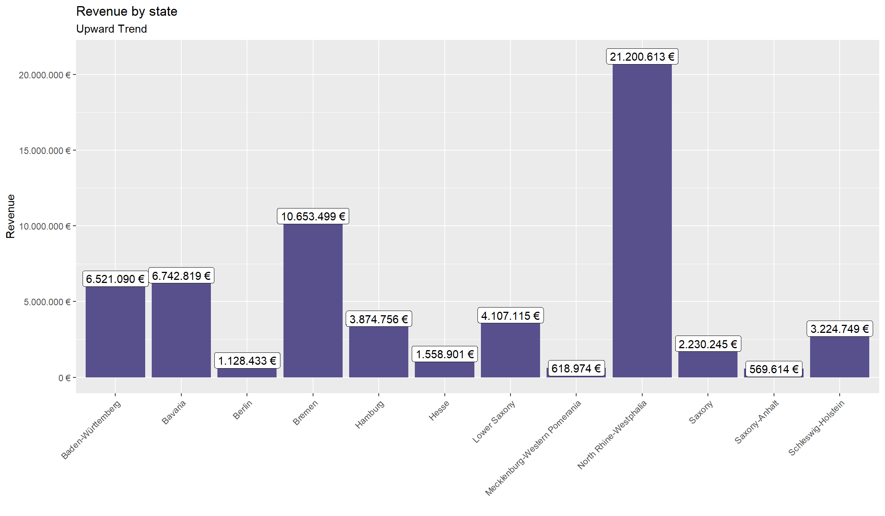
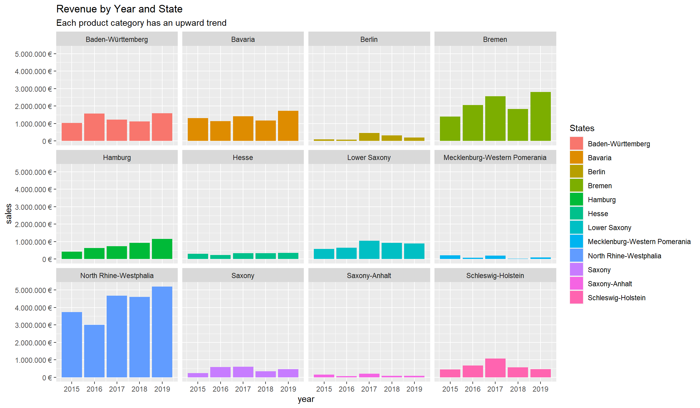

IMPORTANT: You can delete everything in here and start fresh. You might want to start by not deleting anything above this line until you know what that stuff is doing.
This is an .Rmd file. It is plain text with special features. Any time you write just like this, it will be compiled to normal text in the website. If you put a # in front of your text, it will create a top level-header.
Last compiled: 2020-12-02
Notice that whatever you define as a top level header, automatically gets put into the table of contents bar on the left.
You can add more headers by adding more hashtags. These won’t be put into the table of contents
Here’s an even lower level header
Last compiled: 2020-12-02
I’m writing this tutorial going from the top down. And, this is how it will be printed. So, notice the second post is second in the list. If you want your most recent post to be at the top, then make a new post starting at the top. If you want the oldest first, do, then keep adding to the bottom
So far this is just a blog where you can write in plain text and serve your writing to a webpage. One of the main purposes of this lab journal is to record your progress learning R. The reason I am asking you to use this process is because you can both make a website, and a lab journal, and learn R all in R-studio. This makes everything really convenient and in the same place.
So, let’s say you are learning how to make a histogram in R. For example, maybe you want to sample 100 numbers from a normal distribution with mean = 0, and standard deviation = 1, and then you want to plot a histogram. You can do this right here by using an r code block, like this:
#libraries
library(tidyverse)
library(ggplot2)
library(dplyr)
library(readxl)
library(readr)
library(lubridate)
library("writexl")
library(genius)
library(spotifyr)
library(plotly)
library(ggplot2)
library(rvest)
library(xopen)
library(jsonlite)
library(glue)
library(stringi)
library(furrr)
library(RSQLite)
library(httr)
library(keyring)
library(rstudioapi)
library(stringr)
library(purrr)
#import files
bikes_tbl <- read_excel(path = "Business Data Science/00_data/01_bike_sales/01_raw_data/bikes.xlsx")
orderlines_tbl <- read_excel(path = "Business Data Science/00_data/01_bike_sales/01_raw_data/orderlines.xlsx")
bikeshops_tbl <- read_excel(path = "Business Data Science/00_data/01_bike_sales/01_raw_data/bikeshops.xlsx")
#Data Wrangling
bike_orderlines_joined_tbl <- orderlines_tbl %>%
left_join(bikes_tbl, by = c("product.id" = "bike.id")) %>%
left_join(bikeshops_tbl, by = c("customer.id" = "bikeshop.id"))
bike_orderlines_joined_tbl %>%
select(category)%>%
filter(str_detect(category, "^Gravel")) %>%
unique()## # A tibble: 3 x 1
## category
## <chr>
## 1 Gravel - All-Road - Grail
## 2 Gravel - Adventure - Grail
## 3 Gravel - Adventure - Exceedbike_orderlines_wrangled_tbl <- bike_orderlines_joined_tbl %>%
separate(col = category,
into = c("category.1", "category.2", "category.3"),
sep = " - ")%>%
mutate(total.price = price * quantity) %>%
select(-...1, -gender) %>%
select(-ends_with(".id")) %>%
bind_cols(bike_orderlines_joined_tbl %>% select(order.id)) %>%
select(order.id, contains("order"), contains("model"), contains("category"),
price, quantity, total.price,
everything()) %>%
rename(bikeshop = name) %>%
set_names(names(.) %>% str_replace_all("\\.", "_"))
bike_orderlines_wrangled_2_tbl <- bike_orderlines_wrangled_tbl %>%
separate(col = location,
into = c("city", "state"),
sep = ", ")%>%
select(order_id, contains("order"), contains("model"), contains("category"),
price, quantity, total_price,
everything())
#Solution 1
sales_by_state_tbl <- bike_orderlines_wrangled_2_tbl %>%
select(state, total_price) %>%
group_by(state) %>%
summarize(sales = sum(total_price)) %>%
mutate(sales_text = scales::dollar(sales, big.mark = ".",
decimal.mark = ",",
prefix = "",
suffix = " \u20AC"))
sales_by_state_tbl %>%
ggplot(aes(x=state, y=sales))+
geom_col(fill = "#58508d")+
geom_label(aes(label=sales_text))+
geom_smooth(method="lm", se=FALSE)+
theme(axis.text.x = element_text(angle = 45, hjust = 1))+
scale_y_continuous(labels = scales::dollar_format(big.mark = ".",
decimal.mark = ",",
prefix = "",
suffix = " \u20AC"))+
labs(
title = "Revenue by state",
subtitle = "Upward Trend",
x = "",
y = "Revenue"
)
#Solution 2
#glimpse(bike_orderlines_wrangled_tbl)
sales_by_state_year_tbl <- bike_orderlines_wrangled_2_tbl %>%
select(order_date, total_price, state) %>%
mutate(year = year(order_date)) %>%
group_by(year, state) %>%
summarize(sales = sum(total_price)) %>%
#theme(axis.text.x = element_text(angle = 45, hjust = 1))%>%
ungroup()%>%
mutate(sales_text = scales::dollar(sales, big.mark = ".",
decimal.mark = ",",
prefix = "",
suffix = " \u20AC"))
sales_by_state_year_tbl %>%
ggplot(aes(x=year, y=sales, fill = state))+
geom_col()+
facet_wrap(~ state)+
scale_y_continuous(labels = scales::dollar_format(big.mark = ".",
decimal.mark = ",",
prefix = "",
suffix = " \u20AC"))+
labs(
title = "Revenue by Year and State",
subtitle = "Each product category has an upward trend",
fill = "States"
)
#######################################
## Assignment 3 starts here ###
#######################################
#comp assignment 3
#3.1
source("C:/Users/user/Documents/GitHub/ws20-business-data-science-basics---lab-journal-SamuelOwie/codes.R")
artist <- "Taylor Swift"
artist_ID <- get_artist_audio_features(artist)$artist_id[1]
artist_ID## [1] "06HL4z0CvFAxyc27GXpf02"albums <- get_artist_albums(artist_ID, include_groups = c("single"),
authorization = access_token()) %>%
mutate(num = row_number())%>%
as_tibble()
albums## # A tibble: 20 x 15
## album_group album_type artists available_marke~ href id images name
## <chr> <chr> <list> <list> <chr> <chr> <list> <chr>
## 1 single single <df[,6~ <chr [92]> http~ 27cx~ <df[,~ folk~
## 2 single single <df[,6~ <chr [92]> http~ 5smq~ <df[,~ bett~
## 3 single single <df[,6~ <chr [92]> http~ 3s1u~ <df[,~ folk~
## 4 single single <df[,6~ <chr [92]> http~ 3V35~ <df[,~ folk~
## 5 single single <df[,6~ <chr [92]> http~ 0UYy~ <df[,~ folk~
## 6 single single <df[,6~ <chr [92]> http~ 3kqq~ <df[,~ card~
## 7 single single <df[,6~ <chr [92]> http~ 4CF0~ <df[,~ Corn~
## 8 single single <df[,6~ <chr [92]> http~ 2apc~ <df[,~ Dayl~
## 9 single single <df[,6~ <chr [92]> http~ 5nDp~ <df[,~ Deat~
## 10 single single <df[,6~ <chr [92]> http~ 7hvs~ <df[,~ Love~
## 11 single single <df[,6~ <chr [92]> http~ 1jIp~ <df[,~ ME! ~
## 12 single single <df[,6~ <chr [92]> http~ 2A1m~ <df[,~ The ~
## 13 single single <df[,6~ <chr [92]> http~ 1w1z~ <df[,~ You ~
## 14 single single <df[,6~ <chr [92]> http~ 6l7i~ <df[,~ The ~
## 15 single single <df[,6~ <chr [92]> http~ 2Z2K~ <df[,~ Love~
## 16 single single <df[,6~ <chr [92]> http~ 5sZI~ <df[,~ You'~
## 17 single single <df[,6~ <chr [92]> http~ 1iab~ <df[,~ Love~
## 18 single single <df[,6~ <chr [92]> http~ 5LGs~ <df[,~ Only~
## 19 single single <df[,6~ <chr [92]> http~ 5Jnn~ <df[,~ Chri~
## 20 single single <df[,6~ <chr [92]> http~ 6Ou4~ <df[,~ Love~
## # ... with 7 more variables: release_date <chr>, release_date_precision <chr>,
## # total_tracks <int>, type <chr>, uri <chr>, external_urls.spotify <chr>,
## # num <int>#3.2
url_home <- "https://www.rosebikes.com/bikes"
bikes_home <- url_home %>%
read_html()
bike_family_tbl <- bikes_home %>%
html_nodes(css = ".catalog-navigation__link")%>%
html_attr('title') %>%
discard(.p = ~stringr::str_detect(.x, "Sale"))%>%
enframe(name = "position", value = "family_class") %>%
mutate(family_id = str_glue("#{family_class}"))%>%
mutate(url = glue("https://www.rosebikes.com/bikes/{family_class}"))
#bike_category_url <- bike_family_tbl$url[1]
#html_bike_category <- read_html(bike_category_url)
get_bike_data <- function(url){
html_bike_category <- read_html(url)
#bike_category_url <- bike_family_tbl$url[1]
#html_bike_category <- read_html(bike_category_url)
#urls
bike_url_tbl <- html_bike_category %>%
html_nodes(css =".catalog-category-bikes__button") %>%
html_attr("href") %>%
str_remove(pattern = "\\?.*") %>%
enframe(name = "position",value = "part_url") %>%
mutate(url = glue("https://www.rosebikes.com{part_url}"))
#Bike Names
bike_name_tbl <- html_bike_category %>%
html_nodes(".catalog-category-bikes__title-text") %>%
html_text() %>%
str_remove(pattern = "\\n") %>%
str_remove(pattern = "\"") %>%
enframe(name = "position", value = "Name")
#descriptions
bike_desc_tbl <- html_bike_category %>%
html_nodes(".catalog-category-bikes__subtitle") %>%
html_text() %>%
str_remove(pattern = "\\n") %>%
str_remove(pattern = "\"") %>%
enframe(name = "position", value = "Description")
#prices
bike_price_tbl <- html_bike_category %>%
html_nodes(".catalog-category-bikes__price-title") %>%
html_text() %>%
str_remove(pattern = "\\n") %>%
str_remove(pattern = "\"") %>%
enframe(name = "position", value = "Price") %>%
left_join(bike_desc_tbl, by = character()) %>%
left_join(bike_name_tbl, by = character()) %>%
left_join(bike_url_tbl, by = character()) %>%
select(Name, url, Description, Price) %>%
as_tibble()
}
rose_bike_data_tbl <- tibble()
for(i in seq_along(bike_family_tbl$url)){
bike_category_url <- bike_family_tbl$url[i]
rose_bike_data_tbl <- bind_rows(rose_bike_data_tbl, get_bike_data(bike_category_url))
Sys.sleep(5)
print(i)
}## [1] 1
## [1] 2
## [1] 3
## [1] 4
## [1] 5
## [1] 6
## [1] 7
## [1] 8
## [1] 9print(rose_bike_data_tbl, n=20)## # A tibble: 13,622 x 4
## Name url Description Price
## <chr> <glue> <chr> <chr>
## 1 "GROUND C~ https://www.rosebikes.com/b~ "The versatile all-rounder~ "from €1~
## 2 "GROUND C~ https://www.rosebikes.com/b~ "The versatile all-rounder~ "from €1~
## 3 "GROUND C~ https://www.rosebikes.com/b~ "The versatile all-rounder~ "from €1~
## 4 "GROUND C~ https://www.rosebikes.com/b~ "The versatile all-rounder~ "from €1~
## 5 "GROUND C~ https://www.rosebikes.com/b~ "The versatile all-rounder~ "from €1~
## 6 "GROUND C~ https://www.rosebikes.com/b~ "The versatile all-rounder~ "from €1~
## 7 "GROUND C~ https://www.rosebikes.com/b~ "The versatile all-rounder~ "from €1~
## 8 "GROUND C~ https://www.rosebikes.com/b~ "The versatile all-rounder~ "from €1~
## 9 "GROUND C~ https://www.rosebikes.com/b~ "The versatile all-rounder~ "from €1~
## 10 "ROOT MIL~ https://www.rosebikes.com/b~ "The versatile all-rounder~ "from €1~
## 11 "ROOT MIL~ https://www.rosebikes.com/b~ "The versatile all-rounder~ "from €1~
## 12 "ROOT MIL~ https://www.rosebikes.com/b~ "The versatile all-rounder~ "from €1~
## 13 "ROOT MIL~ https://www.rosebikes.com/b~ "The versatile all-rounder~ "from €1~
## 14 "ROOT MIL~ https://www.rosebikes.com/b~ "The versatile all-rounder~ "from €1~
## 15 "ROOT MIL~ https://www.rosebikes.com/b~ "The versatile all-rounder~ "from €1~
## 16 "ROOT MIL~ https://www.rosebikes.com/b~ "The versatile all-rounder~ "from €1~
## 17 "ROOT MIL~ https://www.rosebikes.com/b~ "The versatile all-rounder~ "from €1~
## 18 "ROOT MIL~ https://www.rosebikes.com/b~ "The versatile all-rounder~ "from €1~
## 19 "PIKES PE~ https://www.rosebikes.com/b~ "The versatile all-rounder~ "from €1~
## 20 "PIKES PE~ https://www.rosebikes.com/b~ "The versatile all-rounder~ "from €1~
## # ... with 13,602 more rows#glimpse(rose_bike_data_tbl)
saveRDS(rose_bike_data_tbl, "Business Data Science/00_data/rose_bike_data_tbl.rds")
#samples <- rnorm(100, mean=0, sd=1)
#hist(samples)When you knit this R Markdown document, you will see that the histogram is printed to the page, along with the R code. This document can be set up to hide the R code in the webpage, just delete the comment (hashtag) from the cold folding option in the yaml header up top. For purposes of letting yourself see the code, and me see the code, best to keep it the way that it is. You’ll learn that all of these things and more can be customized in each R code block.